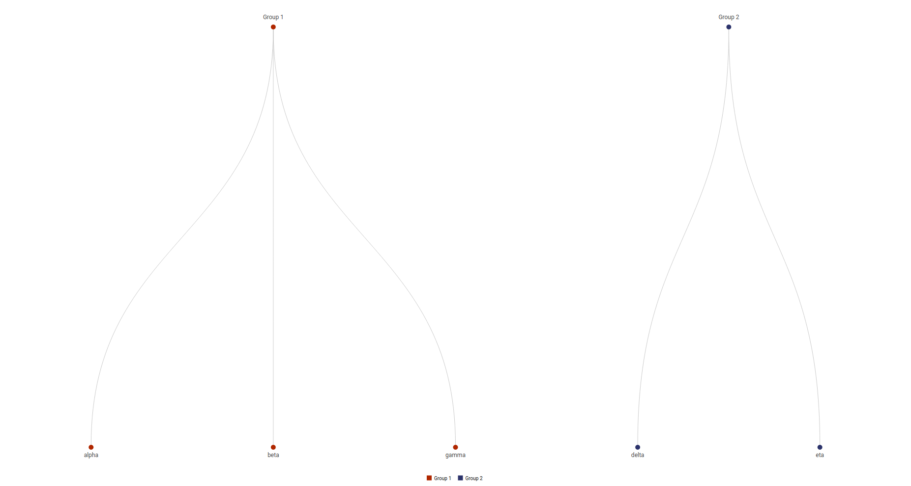
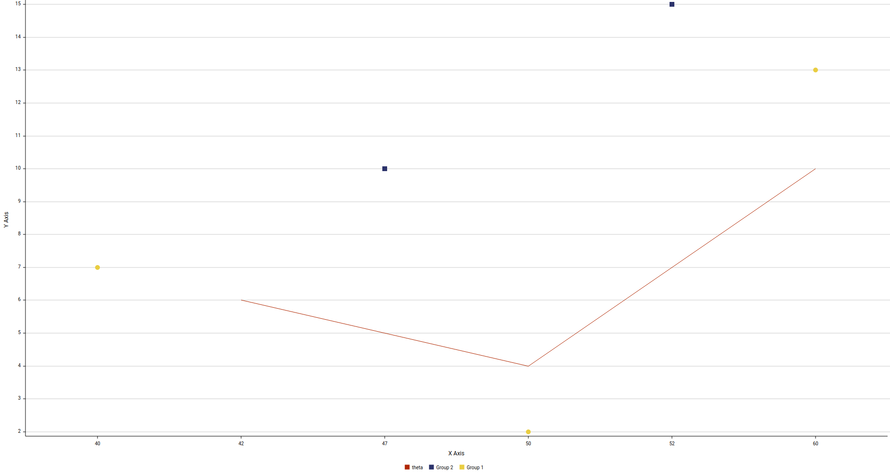

Taller de D3plus
César A. Hidalgo, Dave Landry, Pachá. Enero 2018
Agenda
- El equipo detrás de D3plus
- ¿Por qué existe D3plus?
- ¿Cómo se usa D3plus?
El equipo detrás de D3plus
El equipo detrás de D3plus
D3plus es una librería de visualización basada en D3 y JS desarrollada por Datawheel  Misión: “Hacer que la información del mundo sea accesible y digerible para beneficio de todos.”
Misión: “Hacer que la información del mundo sea accesible y digerible para beneficio de todos.”
El equipo detrás de D3plus
- Datawheel es una startup formada por personas del MIT Media Lab
- Desarrollamos plataformas de visualización
- A la fecha contamos con proyectos a escala nacional (DataChile) y global (OEC)
¿Por qué existe D3plus?
¿Por qué existe D3plus?
- Creamos D3plus ya que desde el primer proyecto de Datawheel las herramientas existentes no eran suficientes
- El objetivo de D3plus es proveer una librería flexible, fácil de usar y escalable
- D3plus se puede usar en sitios estáticos, se integra con APIs y es compatible con React
- Además D3plus es open source (licencia MIT)
¿Por qué existe D3plus?
D3plus se usa en los siguientes proyectos:
- DataChile
- DataUSA
- Observatorio de la Complejidad Económica
- DataViva
- Pantheon
Uso de D3plus
Herramientas necesarias para este taller
- Python v2.7 o superior
- Atom u otro editor de texto plano
Configurando lo necesario para trabajar
Ya sea en Windows o *nix abre la terminal y crea un directorio en tu home o donde se pueda crear un servidor virtual
mkdir ~/taller-d3plus
cd ~/taller-d3plus
python -m SimpleHTTPServercon eso listo dirígete a localhost:8000 en tu navegador
Descarga la última versión
Ultima versión disponible: 2.0 alpha 16
Visualización de datos univariados
- Treemap
- Pie
- Tree
Treemap

Treemap
Crea el archivo treemap.html en tu directorio de trabajo
La estructura básica del archivo sigue el estándar HTML
<!doctype html>
<meta charset="utf-8">
<script src="../d3plus.v2.0.0-alpha.16.full.min.js"></script>
<body>
</body>
<script>
CODIGO D3PLUS
</script>Treemap
El código D3plus para un treemap básico es:
const data = [
{parent: "Group 1", id: "Alpha", value: 29},
{parent: "Group 1", id: "Beta", value: 10},
{parent: "Group 1", id: "Gamma", value: 2},
{parent: "Group 2", id: "Delta", value: 29},
{parent: "Group 3", id: "Eta", value: 25}
];
new d3plus.Treemap()
.data(data)
.groupBy(["parent", "id"])
.render();Treemap
Si queremos mejorar el tamaño del treemap y los bordes podemos agregar código CSS entre script y body
<style>
body {
margin: 0;
overflow: hidden;
}
</style>Pie

Tree

Visualización de datos complejos
- Plot
Plot

Visualizaciones complejas
- Priestley
- Geomap
Priestley

Geomap